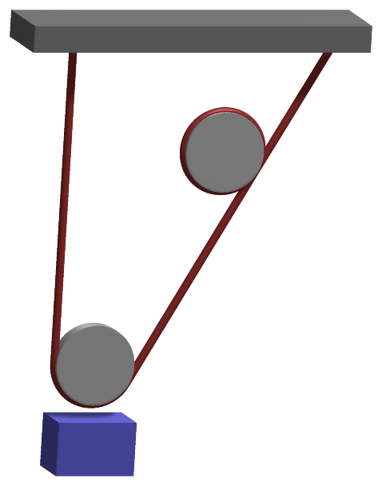
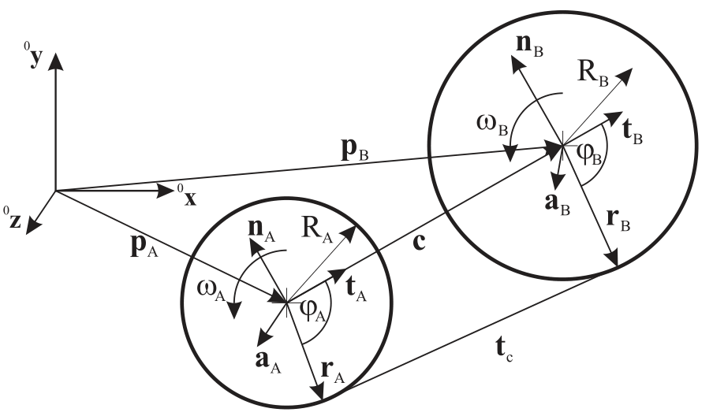

ObjectConnectorReevingSystemSprings
A rD reeving system defined by a list of torque-free and friction-free sheaves or points that are connected with one rope (modelled as massless spring). NOTE that the spring can undergo tension AND compression (in order to avoid compression, use a PreStepUserFunction to turn off stiffness and damping in this case!). The force is assumed to be constant all over the rope. The sheaves or connection points are defined by \(nr\) rigid body markers \([m_0, \, m_1, \, \ldots, \, m_{nr-1}]\). At both ends of the rope there may be a prescribed motion coupled to a coordinate marker each, given by \(m_{c0}\) and \(m_{c1}\) .


Interface
Python names:
ObjectConnectorReevingSystemSpringsorReevingSystemSprings, andVReevingSystemSpringsfor its visualization
Parameters
The parameters of the item; in a dictionary, its type is ‘ConnectorReevingSystemSprings’:
name |
type |
size |
default |
description |
|---|---|---|---|---|
name |
String |
‘’ |
connector’s unique name |
|
markerNumbers |
ArrayMarkerIndex |
[ invalid (-1), invalid (-1) ] |
(symbol: \([m_0, \, m_1, \, \ldots, \, m_{nr-1},\, m_{c0}, \, m_{c1}]\tp\)) list of position or rigid body markers used in reeving system and optional two coordinate markers (\(m_{c0}, \, m_{c1}\)); the first marker \(m_0\) and the last rigid body marker \(m_{nr-1}\) represent the ends of the rope and are directly connected to a position; the markers \(m_1, \, \ldots, \, m_{nr-2}\) can be connected to sheaves, for which a radius and an axis can be prescribed. The coordinate markers are optional and represent prescribed length at the rope ends (marker \(m_{c0}\) is added length at start, marker \(m_{c1}\) is added length at end of the rope in the reeving system) |
|
hasCoordinateMarkers |
Bool |
False |
flag, which determines, the list of markers (markerNumbers) contains two coordinate markers at the end of the list, representing the prescribed change of length at both ends |
|
coordinateFactors |
Vector2D |
2 |
[1,1] |
(symbol: \([f_0,\, f_1]\tp\)) factors which are multiplied with the values of coordinate markers; this can be used, e.g., to change directions or to transform rotations (revolutions of a sheave) into change of length |
stiffnessPerLength |
UReal |
0. |
(symbol: \(EA\)) stiffness per length [SI:N/m/m] of rope; in case of cross section \(A\) and Young’s modulus \(E\), this parameter results in \(E\cdot A\); the effective stiffness of the reeving system is computed as \(EA/L\) in which \(L\) is the current length of the rope |
|
dampingPerLength |
UReal |
0. |
(symbol: \(DA\)) axial damping per length [SI:N/(m/s)/m] of rope; the effective damping coefficient of the reeving system is computed as \(DA/L\) in which \(L\) is the current length of the rope |
|
dampingTorsional |
UReal |
0. |
(symbol: \(DT\)) torsional damping [SI:Nms] between sheaves; this effect can damp rotations around the rope axis, pairwise between sheaves; this parameter is experimental |
|
dampingShear |
UReal |
0. |
(symbol: \(DS\)) damping of shear motion [SI:Ns] between sheaves; this effect can damp motion perpendicular to the rope between each pair of sheaves; this parameter is experimental |
|
regularizationForce |
Real |
0.1 |
(symbol: \(F_{reg}\)) small regularization force [SI:N] in order to avoid large compressive forces; this regularization force can either be \(<0\) (using a linear tension/compression spring model) or \(>0\), which restricts forces in the rope to be always \(\ge -F_{reg}\). Note that smaller forces lead to problems in implicit integrators and smaller time steps. For explicit integrators, this force can be chosen close to zero. |
|
referenceLength |
Real |
0. |
(symbol: \(L_{ref}\)) reference length for computation of roped force |
|
sheavesAxes |
Vector3DList |
[] |
(symbol: \(\lv_a = [\LU{m0}{\av_0},\, \LU{m1}{\av_1},\, \ldots ] in [\Rcal^{3}, ...]\)) list of local vectors axes of sheaves; vectors refer to rigid body markers given in list of markerNumbers; first and last axes are ignored, as they represent the attachment of the rope ends |
|
sheavesRadii |
Vector |
[] |
(symbol: \(\lv_r = [r_0,\, r_1,\, \ldots]\tp \in \Rcal^{n}\)) radius for each sheave, related to list of markerNumbers and list of sheaveAxes; first and last radii must always be zero. |
|
activeConnector |
Bool |
True |
flag, which determines, if the connector is active; used to deactivate (temporarily) a connector or constraint |
|
visualization |
VObjectConnectorReevingSystemSprings |
parameters for visualization of item |
Visualization parameters
The parameters of VObjectConnectorReevingSystemSprings, given as visualization:
name |
type |
size |
default |
description |
|---|---|---|---|---|
show |
Bool |
True |
set true, if item is shown in visualization and false if it is not shown |
|
ropeRadius |
float |
0.001 |
radius of rope, drawn as one tube along the free spans and the arcs on the sheaves; visualizationSettings.general.cylinderTiling segments around it, connectors.curveTiling segments per full turn of an arc |
|
color |
Float4 |
4 |
[-1.,-1.,-1.,-1.] |
RGBA connector color; if R==-1, use default color |
Drawing
Drawn as all connectors; the rope as one tube of radius ropeRadius along the spans and the arcs on the sheaves, the arcs with connectors.curveTiling segments per turn, general.cylinderTiling around.
Settings beyond those of all connectors: connectors.curveTiling, general.cylinderTiling.
Output variables
Available as OutputVariableType in sensors, Get...Output() and other functions:
output variable |
symbol |
description |
|---|---|---|
Distance |
\(L\) |
current total length of rope |
VelocityLocal |
\(\dot L\) |
scalar time derivative of current total length of rope |
ForceLocal |
\(F\) |
scalar force in reeving system (constant over length of rope) |
Detailed description
General model assumptions
The ConnectorReevingSystemSprings model is based on a linear elastic, visco-elastic, and mass-less spring which
is tangent to a list of rolls. The contact with the rolls is friction-less, causing no torque w.r.t. the rolling axis of the sheave.
The force in the rope results from the difference of the total length \(L\) compared to the reference length or the rope, which
may be changed by adding or subtracting rope length at the end points. All geometric operations are performed in 3D, allowing to model
simple reeving systems in 3D.


Fig. 38 Geometry of common tangent for two spatial circles defined by radii \(R_A\) and \(R_B\) as well as by the normalized axis vectors \(\av_A\) and \(\av_B\). The tangent is undefined, if one of the axis vectors is parallel to the vector \(\cv\), which connects the two center points. The positive rotation sense is indicated by means of the angular velocities \(\omega_A\) and \(\omega_B\).
Common tangent of two circles in 3D
In order to compute the total length of the rope of the reeving system, the tangent of two arbitrary circles in space needs to be computed. Considering Fig. 38, the relations are based on the center points of the circles \(\pv_A\) and \(\pv_B\), the radii \(R_A\) and \(R_B\) as well as the axis vectors \(\av_A\) and \(\av_B\), the latter vectors also defining the side at which the tangent contacts. For the definition of the tangent, the vectors \(\rv_A\) and \(\rv_B\) need to be computed.
For the special case of \(R_A=R_B=0\), it follows that \(\rv_A=\pv_A\) and \(\rv_B=\pv_B\). Otherwise, we first compute the vector between circle centers,
and obtain the tangent vectors
as well as the normal vectors
Note that the orientation of the axis vectors \(\av_A\) and \(\av_B\) defines the orientation of the normals. By definition, we assume the following conditions,
For two circles with equal radius and axes orientations, the angles result in \(\varphi_A=\varphi_B=\pi\). In general, the unknown vectors \(\rv_A\) and \(\rv_B\) are computed by means of Newton’s method. The unknown tangent vector is given as
We now parameterize the two unknown vectors by means of unknown angles \(\varphi_A\) and \(\varphi_B\),
As vectors \(\rv_A\) and \(\rv_B\) must be perpendicular to \(\tv_c\), it follows that
or
The relations (76) reduce to only one equation, if either \(R_A=0\) or \(R_B = 0\). The equations can be solved by Newton’s method by computing the jacobian of \(\Jm_{CT}\) of (76) w.r.t. the unknown angles \(\varphi_A\) and \(\varphi_B\). The iterations are started with
and iterate until the error is below a certain tolerance, for details see the implementation in Geometry.h.
Connector forces
The current rope length results from the configuration of sheaves, including start and end position:
in which \(d_{...}\) represents the free spans between two sheaves as computed from the common tangent in the previous section, and \(C_{...}\) represents the length along the circumference of the according marker if the according radius \(r\) is non-zero. The quantity \(C_{...}\) can be computed easily as soon as the radius vectors to the tangents \(\rv_A\) and \(\rv_B\) are known. Within a series of tangents, the previous to the current tangent will always enclose an angle between \(0\) and \(2\cdot \pi\).
In case that hasCoordinateMarkers=True, the total reference length and its derivative result as
while we set \(L_0 = L_{ref}\) and \(\dot L_0=0\) otherwise. The linear force in the reeving system (assumed to be constant all over the rope) is computed as
The rope force is computed from
Which allows small compressive forces \(F_{reg}\). In case that \(F_{reg} < 0\), compressive forces are not regularized (linear spring). The case \(F_{reg} = 0\) will be used in future only in combination with a data node, which allows switching similar as in friction and contact elements.
Note that in case of \(L_0=0\), the term \(\frac{1}{L_0}\) is replaced by \(1000\). However, this case must be avoided by the user by choosing appropriate parameters for the system.
Additional damping may be added via the parameters \(DT\) and \(DS\), which have to be treated carefully. The shearing parameter may be helpful to damp undesired oscillatory shearing motion, however, it may also damp rigid body motion of the overall mechanism.
Further details are given in the implementation and examples are provided in the Examples and TestModels folders.
Mini example
#a rope from a fixed point over no sheave to a hanging body: the rope as one spring along its length
inertia = InertiaCuboid(density=1000, sideLengths=[0.1,0.1,0.1])
node = mbs.AddNode(NodeRigidBodyEP(referenceCoordinates=[0,-1,0]+eulerParameters0))
body = mbs.AddObject(ObjectRigidBody(nodeNumber=node, mass=inertia.Mass(), inertia=inertia.GetInertia6D()))
mbs.AddLoad(LoadMassProportional(markerNumber=mbs.AddMarker(MarkerBodyMass(bodyNumber=body)), loadVector=[0,-9.81,0]))
mTop = mbs.AddMarker(MarkerBodyRigid(bodyNumber=oGround, localPosition=[0,0,0]))
mBody = mbs.AddMarker(MarkerBodyRigid(bodyNumber=body, localPosition=[0,0,0]))
EA = 1e4
mbs.AddObject(ObjectConnectorReevingSystemSprings(markerNumbers=[mTop, mBody], stiffnessPerLength=EA,
dampingPerLength=100, referenceLength=1, sheavesAxes=exu.Vector3DList([[0,0,1],[0,0,1]]),
sheavesRadii=[0,0]))
mbs.Assemble()
mbs.SolveDynamic()
#the rope is stretched by m*g*L/EA (damped to rest)
exu.sys['testResult'] = mbs.GetNodeOutput(node, exu.OutputVariableType.Displacement)[1]/(inertia.Mass()*9.81/EA) #-1
Relevant Examples (Ex) and TestModels (TM) with weblink to github: craneReevingSystem.py (Ex), reevingSystemSpringsTest.py (TM)